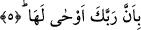
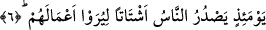

mutlaka Biz sizi görürüz.” (Yunus, 10/61)
O halde ey âsi kul! Bunca şâhid senin aleyhine şâhidlik edince hâlin nice olur hiç
düşündün mü?
5. Rabbinin ona bildirmesiyle
O gün yer, Rabbinin kendisine vahyetmesi sebebi ile, cumhur âlimlerin tercihlerine
göre, lisan-ı kâl ile konuşmasını emredecek, o da tüm haberlerini söyleyecektir.
Ya da, Rabbinin -tıpkı lisan-ı hâl ile konuşma durumunda olduğu gibi- yer de
haberlere delalet eden haller vücuda getirmesi ile haberlerini vermesi sebebi ile...
Bu âyet-i kerimede, “beden arzı”nın, hayvanî ruh ile kuvvetlerin kargaşası sebebi ile,
insanî ruhun çekilmesi esnasındaki sarsılışına, onun metâını çıkarmasına işâret vardır -
ki o insanda belli bir miktardadır-.
Ruh, amel biçimleri ile kalpte yer etmiş inançların tümü belli bir miktardadır.
“İnsan, ne oluyor buna dediği zaman” âyeti ile işâret edilen de şudur: İnsan, ne
oluyor bu beden arzına?! Niçin sarsıldı, niçin çalkalandı, sebebi, mizacın inhirafı mı
yoksa, karışımların galib gelmesi mi? dediği zaman.
“O gün yer haberlerini anlatır.” Âyeti ile de şuna işâret edilir: O gün beden arzı,
Rabbinin kendisine işâret etmesi, “çalkalan, harab ol” şeklinde emir vermesi, sebebi ile
lisânı haliyle haberlerini anlatır. Yüklerin ortaya çıkarılması; rûhun çıkması ve ölümün
tahakkuk etmesi anında olur.
6. O gün insanlar amellerinin (karşılığını) görmeleri için darmadağınık
kabirlerinden çıkıp mahşer yerine gelirler.
Yukarda anlatılanların meydana geleceği “o” gün insanlar gerek hayır, gerek şer
işlemiş oldukları “amellerini” ve karşılığını “görmeleri için kabirlerinden hesab
meydanına “darmadağınık gelirler.”
Âyet-i kerimedeki, “amelleri” ifâdesini “amellerinin karşılığı” şeklinde takdir ettik.
Çünkü amellerin kendileri gözle görülmez. Zirâ burada zikri geçen “görme” bilme
anlamında değildir. Çünkü devamındaki “artık kim zerre ağırlığınca, bir hayır işlerse”
anlamındaki âyet-i kerime, adı geçen “görme” fiilinin îzâhı mâhiyetindedir. Ayrıca
buradaki “görme” fiilinin, gözle görme anlamına olduğunu, fiilin bir mef’ul almasından
da anlayabiliyoruz. Çünkü biliyoruz ki soyut “görme” iki mef’ul alır. Bu “görme”, ancak
ameller nûrânî veya zulmânî bir sûret verilecekse o zaman kalbî görme olabilir. Veya